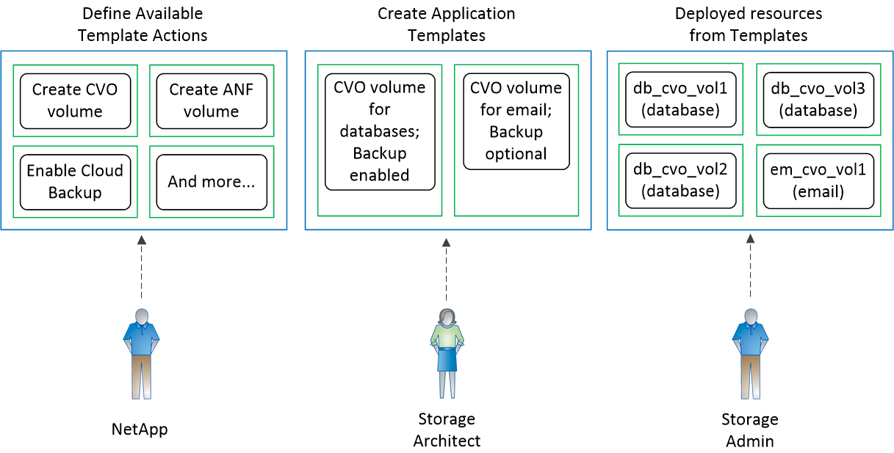

ドキュメントの変更をリクエスト
ドキュメントの変更をリクエスト GitHub で編集
GitHub で編集 寄稿者向けガイド
寄稿者向けガイドAppTemplate について説明します
AppTemplate サービスを使用すると、作業環境でのリソース作成を標準化できます。たとえば、「ボリュームテンプレート」内の必須パラメータをハードコーディングして、あとでストレージ管理者がテンプレートを使用してボリュームを作成するときに適用できます。これには、必要なディスクタイプ、サイズ、プロトコル、 Snapshot ポリシー、クラウドプロバイダ、 その他。作成したボリュームごとに、 Cloud Backup などの特定のサービスをオンにすることもできます。
テンプレートを使用することで、ストレージ管理者は、データベース、 E メール、ストリーミングサービスなど、導入する各アプリケーションのワークロード要件に合わせて最適化されたボリュームを簡単に作成できます。また、各ボリュームがアプリケーションごとに最適に作成されていることを確認すれば、ストレージアーキテクトの負担が軽減されます。
の機能
AppTemplate には、次の機能と利点があります。
-
インフラの設計と開発を自動化し、改善します
-
クラウドバックアップやクラウドデータセンスなど、さまざまな NetApp クラウドサービスを 1 箇所でアクティブ化できます
-
変更され、テンプレートに適合しなくなったリソースを特定します（「ドリフト」機能を使用）。
「ドリフト」とは何ですか？
「ドリフト」を使用すると、テンプレートを使用してリソースを作成するときに使用されるパラメータ値を Cloud Manager で監視できます。この時点で、「ドリフト」はリソースがいつ変更されたかを特定できるため、手動で調整を行って、テンプレートに準拠するように戻すことができます。将来的には、リソースがコンプライアンス違反になったときに通知を送信したり、テンプレートから作成されたすべてのリソースが自動的にコンプライアンスに戻されるようにユーザーの変更を元に戻したりすることができます。
使用可能なテンプレートアクション
テンプレートは、事前に定義された値を持つ「アクション」のチェーンです。次のアクションを含むテンプレートを作成できます。
-
リソースアクション： *
-
Cloud Volumes ONTAP ボリュームの作成（ AWS 、 Azure 、 GCP 上）
-
Azure NetApp Files ボリュームを作成します
-
オンプレミスの ONTAP ボリュームを作成
-
Cloud Volumes ONTAP 作業環境の作成（ AWS 上のシングルノードまたは HA システム）
-
特定の基準を満たす既存のリソースを検索する（既存のリソースに「サービス」アクションを適用できるようにする）
-
サービスアクション： *
-
アクティブ化します "クラウドバックアップ" ボリューム（ Azure NetApp Files には該当しません）
-
アクティブ化します "クラウドデータの意味" ボリューム
-
アクティブ化します "レプリケーション" ボリューム（ Azure NetApp Files には該当しません）
たとえば、 Cloud Volumes ONTAP ボリュームを作成するテンプレートを作成できます。または、 Cloud Volumes ONTAP ボリュームを作成してから、そのボリュームで Cloud Backup を有効にします。または、 Cloud Volumes ONTAP ボリュームを作成し、そのボリュームで Cloud Backup_or_Cloud Data Sense を有効にします。
ネットアップは、時間の経過とともにアクションを追加します。
AppTemplate の仕組み
AppTemplate サービスは 3 つの部品で構成されています。テンプレートを実行した結果、使用可能なテンプレート「アクション」、カスタマイズされたアプリケーションテンプレート、および展開されたリソース。次の図は、各コンポーネント間の関係を示しています。

高レベルでは、テンプレートは次のように機能します。
-
ネットアップでは、使用可能なテンプレート「アクション」を定義しています。
たとえば、「処理」を使用して Cloud Volumes ONTAP ボリュームや Azure NetApp Files ボリュームを作成できます。
-
ストレージアーキテクトは、アプリケーションテンプレートの作成に使用する「アクション」を選択し、リストされたパラメータに特定の値をハードコーディングします。
たとえば、 Cloud Volumes ONTAP データベースのワークロードの伝送に使用される高速ディスクと大容量の RAM を選択します。また、ボリュームごとにバックアップを作成する必要があります。
-
ストレージ管理者は、テンプレートを使用して、使用するアプリケーションに合わせて最適化されたリソースを作成します。
たとえば、データベース用に作成したボリュームテンプレートを使用して、 Oracle データベースに使用するボリュームを作成します。
-
このサービスは、ストレージアーキテクトが決定した「ドリフト」機能を使用して、テンプレートで定義されている特定のリソース設定を追跡します。
価格とライセンス
AppTemplate 機能はライセンス不要で、すべての Cloud Manager ユーザが無料で使用できます。

|
テンプレートを使用すると、作成したリソースにクラウドサービスを適用できます。たとえば、すべてのボリュームで Cloud Backup を有効にします。この場合、バックアップサービスと、バックアップファイルで使用されるオブジェクトストレージスペースの使用コストが発生します。 |
制限
-
AppTemplate サービスは、 Gov クラウドのどのリージョンでも、またはインターネットにアクセスできないサイトではサポートされていません。
-
テンプレートを使用して既存のアグリゲートに Cloud Volumes ONTAP ボリュームを作成することはできません。新しいアグリゲートに新しいボリュームが作成されます。